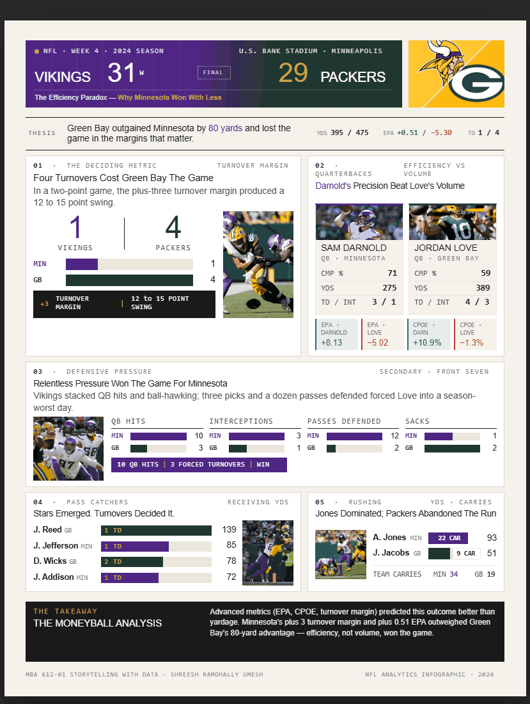

Sports Analytics
NFL Analytics: Minnesota vs. Green Bay
An infographic analyzing the "efficiency paradox" in NFL Week 4, 2024: the Vikings won 31-29 despite being outgained 475-395 in total yards. Advanced metrics like EPA, CPOE, and turnover margin explained the outcome better than raw yardage did.
- 475 vs 395 total yards (Green Bay led)
- +3 turnover margin for Minnesota
- 31-29 final score, Vikings win
Key finding: efficiency, not volume, won the game.
View Full Case Study